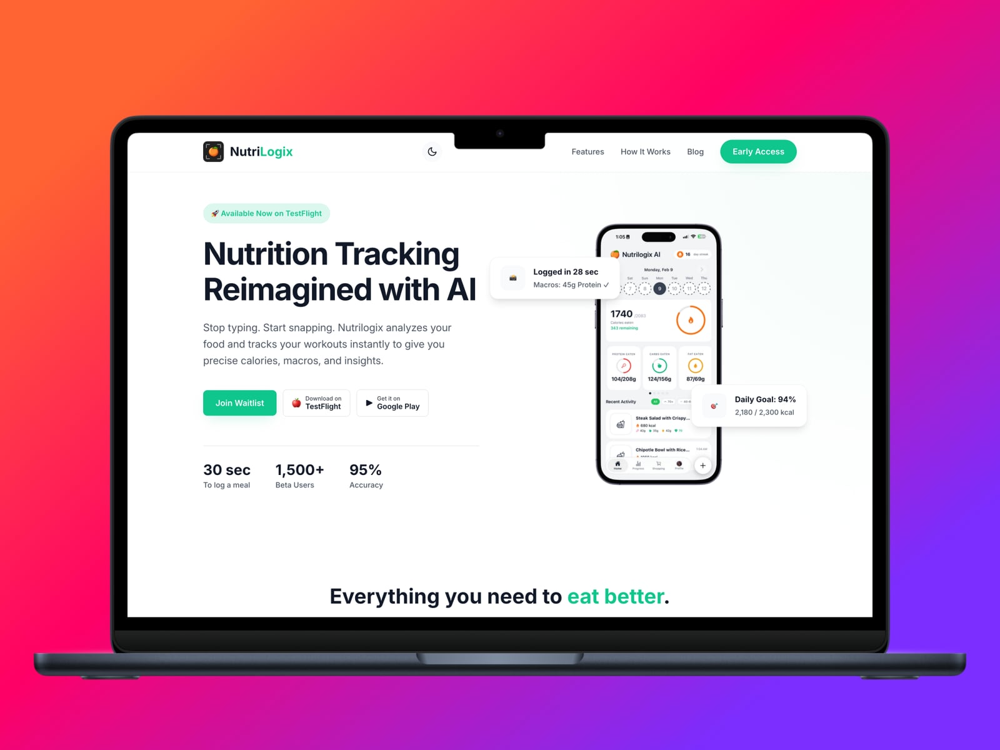
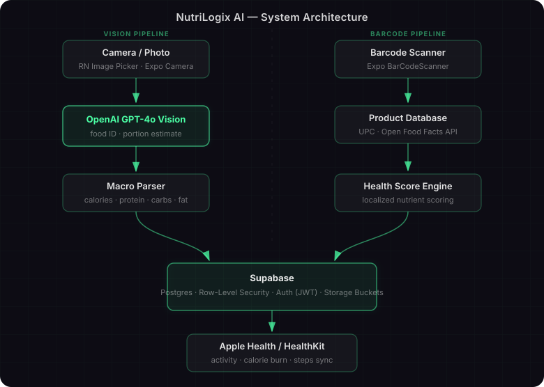

NutriLogix AI
AI-powered nutrition and fitness tracker. Snap a photo of any meal to log calories and macros instantly, scan barcodes for localized health scores, and sync activity in real time via Apple Health. Currently in TestFlight beta.
- React Native
- OpenAI API
- Apple Health
Case study
Problem
Manually logging meals is tedious and inaccurate — users either skip it or spend minutes searching databases for food items. Existing trackers require too many taps and still get portion sizes wrong.
Approach
Built a vision model pipeline (OpenAI GPT-4o Vision) that identifies food, estimates portions, and returns structured macro data from a single photo. Barcode scanning adds localized health scores pulled from product databases. Apple Health sync keeps calorie burn and activity data in one place without manual input.
Outcome
Launched on TestFlight with early access users actively logging meals. Photo logging reduces manual entry time from ~2 minutes to under 10 seconds per meal.
